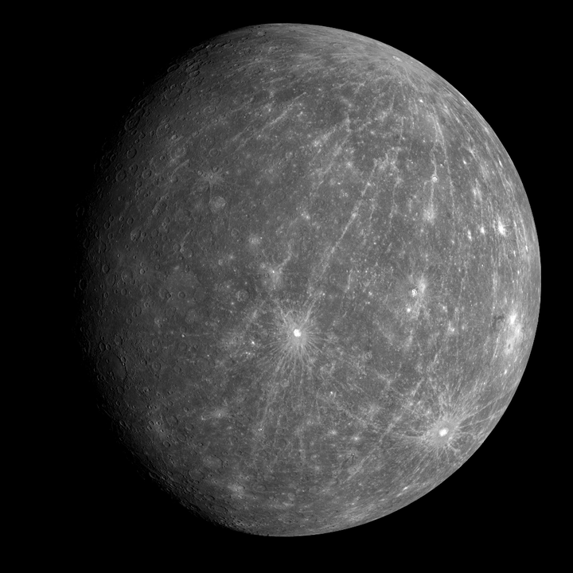
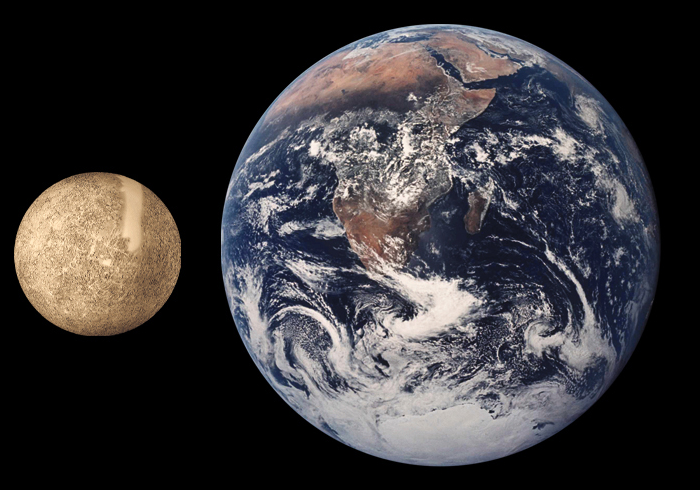

Merkurius on aurinkokunnan pienin ja Aurinkoa lähin planeetta. Sen kiertoaika Auringon ympäri on planeetoista lyhyin: 88 vuorokautta. Akselinsa ympäri se pyörähtää 59 vuorokaudessa. Merkurius on kuiva, kuollut ja käytännössä kaasukehätön maankaltainen kiviplaneetta. Sen törmäyskraatterien täyttämä pinta muistuttaa Kuun pintaa. Merkurius on taivaan kirkkaimpia kohteita ja se on tunnettu esihistoriallisesta ajasta lähtien.
Kaasukehän puutteen takia planeetan lämpötilan vaihtelut ovat suuria: ne vaihtelevat noin 100 K:n (−173 °C) yölämpötiloista 700 K:n (427 °C) päivälämpötiloihin. Sen nimi tulee roomalaisen mytologian Mercuriuksesta, joka oli varkaiden ja kauppiaiden jumala sekä jumalten sanansaattaja.
Lähde wikipedia.
